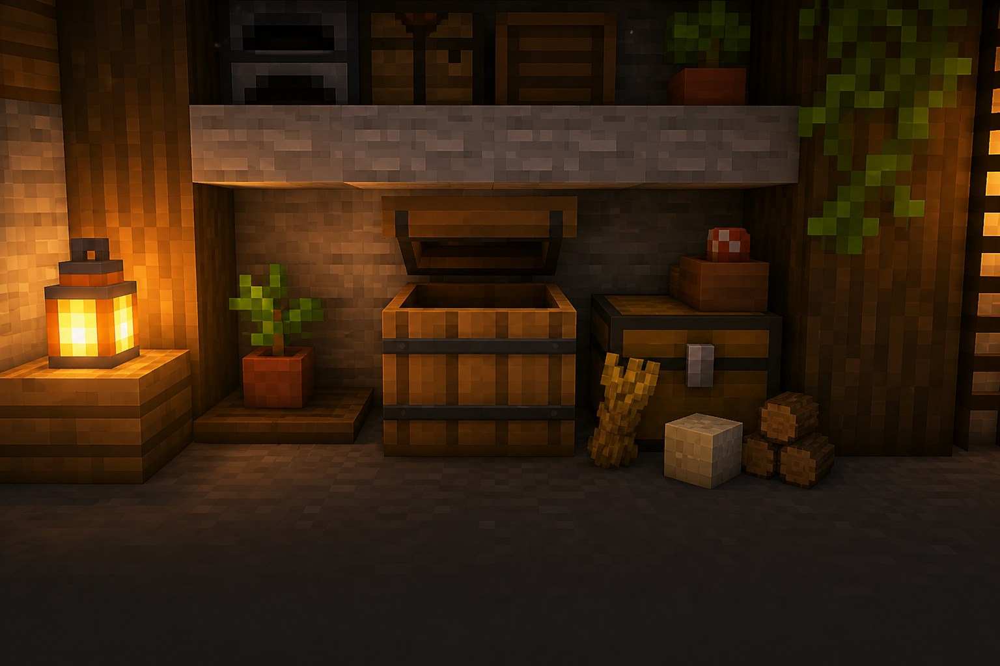

Корисне відкриття
База, що допомагає
Скриня
не всюди зручна.
Бочка зберігає речі так само, як скриня, але відкривається навіть під стелею.

Навіщо вона потрібна?
Скриня не відкриється, якщо над нею стоїть блок. Бочка — відкриється. Тому з нею легко робити акуратні стіни зі сховищем.
Три прості дії
Як користуватися бочкою
1Постав у стінуПередня сторона має дивитися назовні+
Постав бочку там, де хочеш зберігати речі. Її можна вбудувати в стіну або під полицю.
2Відкрий навіть під стелеюНа відміну від скрині+
Натисни використання на бочці. Блок прямо над нею не завадить відкрити інвентар.
3Склади речі за темамиОдна бочка — одна категорія+
Зроби окремі бочки для їжі, каменю, дерева та рідкісних знахідок. Шукати стане набагато швидше.
Бочка: як це виглядає
полицею
під рукою
● Над бочкою можна ставити інші блоки.
Підказка мандрівникові
Важливо знати
Місткість така сама
Бочка вміщує стільки ж речей, скільки одна скриня.
Подвійної бочки немає
Дві бочки поруч не об’єднуються в одну велику.
Корисна для жителя
Бочка може стати робочим місцем рибалки.
Маленьке завдання
Спробуй за 5 хвилин
- Постав дві бочки під полицею у своїй базі.
- Поклади туди їжу та матеріали для будівництва.
- Перевір, що обидві бочки відкриваються.
★ Бонус: зроби маленьку комору без жодної скрині.